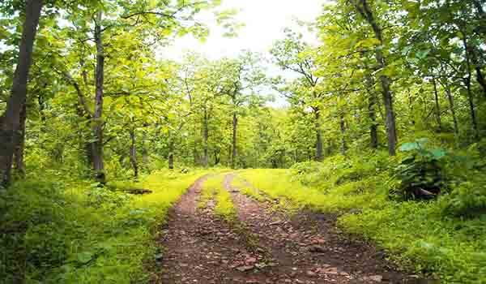

Melghat wildlife Sanctuary another famous wildlife sanctuaries in Maharashtra which is the proud home to many flora and fauna. Surrounded by the Satpura range and the Tapti River, the Wildlife sanctuary is famous as a tiger reserve. Melghat was declared a tiger reserve and was among the first nine tiger reserves notified in 1973-74 under the Project Tiger. The name Melghat means ‘meeting the Ghats’ as Melghat wildlife sanctuary meets the Western Ghats of India.
The Melghat Sanctuary is also the home to some of the endangered species; Forest Owlet is an example of such endangered species. Nilgai, sambar, leopard, sloth bears and other animals can also be seen in the forest.
Best time to visit:
The best time to visit the wildlife sanctuary is from December to June.
Location:
Located at Amravati District of Maharashtra.
Safari timings:
Safari Starts from morning 8 am to evening 5 pm.